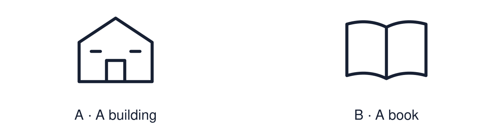

Arrival choices
Previous lesson reminder:

Start with 1 and 2. Try 3 and 4 when ready. Reading and exact scribing are available.
1 Give one way a faith community can support belonging.
Support: Use the reminder strip or talk it through with an adult.
2 Which meaning fits place of worship?
Support: Choose: A building where people meet to worship OR A part of a building with a job to do.
3 Name one feature of a mosque and its purpose.
Support: Use the model evidence anchor B or read one relevant card together.
4 Is a place of worship used only for worship?
Support: Give a reason when ready.
Stretch: use a precise example or explain which detail supports your answer.
Evidence cards
Read, point or listen. Keep the source label with any detail you use.
A Prayer hall
Many mosque prayer halls have open carpeted space for rows of worshippers. Chairs or other adjustments may support people who cannot comfortably stand, bow or kneel.
Source: Authored RE summary
Limit: Mosques differ in size and design.
B Mihrab and minbar
The mihrab is a niche showing the direction of Makkah, which Muslims face to pray. The minbar is a raised platform where the imam gives the Friday talk.
Source: Authored RE summary
Limit: Mosques differ in size and design.
C Washing area
Before prayer many Muslims wash in a set way, called wudu. Mosques provide a washing area. Shoes are left at the door.
Source: Authored RE summary
Limit: Belief and practice vary between individuals and communities.
D Community use
Many mosques also run classes, food banks and community meals. A place of worship serves a community as well as worship.
Source: Authored RE summary
Limit: Not every mosque offers the same activities.
Shared investigation
1. Inspect each card, then match each feature to its purpose.
2. Say whether the purpose is worship, community or both.
Work with a partner or adult, or use your own table. One person suggests; the other checks the evidence. Swap after one turn. Passing is allowed.
Move or match the cards
| Cards to use |
|---|
| Open carpeted floor |
| Washing area |
| Mihrab |
Possible labels: Preparing for prayer / Room to pray in rows / Shows the direction of prayer
Support: Read one evidence card together. Highlight a useful detail. Rehearse with: The ___ is for ___. This shows that ___.
Further challenge: Explain what the features of a building can tell us about what worshippers believe.
Supported independent task
Complete this route only. Identify key features of a place of worship and explain one purpose.
1. Label two features on the picture using the word bank.
2. Match each to a purpose card.
3. Say one purpose aloud.
Support: Read one evidence card together. Highlight a useful detail. Rehearse with: The ___ is for ___. This shows that ___. Complete the organiser one space at a time. The ___ is for ___. This shows that ___.
An adult may read or scribe your exact response. They should not choose the answer.
Standard independent task
Complete this route only. Identify key features of a place of worship and explain one purpose.
1. Label three features for your visitor guide.
2. Write the purpose of each.
3. Add one respectful-visitor tip.
Support: The ___ is for ___. This shows that ___.
Check the required evidence and revise one detail.
Stretch independent task
Complete this route only. Identify key features of a place of worship and explain one purpose.
1. Create a visitor guide with three features and purposes.
2. Explain how one feature links to a belief.
3. Add a tip and explain why it shows respect.
Support: Choose the evidence independently. Use the frame only if it helps.
Explain what the features of a building can tell us about what worshippers believe.
Exit ticket
Choose a response mode. You may give your answers privately to an adult.
Name one feature of a mosque and its purpose.
Is a place of worship used only for worship?
Support: The ___ is for ___. This shows that ___.
Further challenge: Explain what the features of a building can tell us about what worshippers believe.